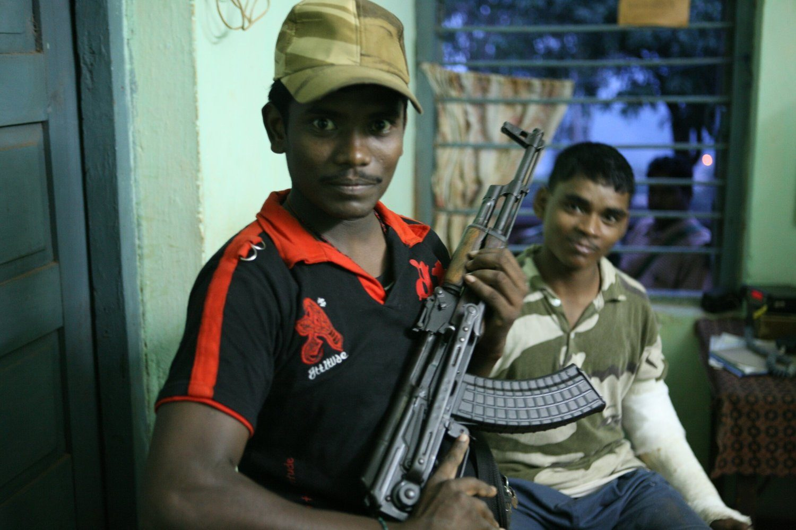

by Jason Miklian and Scott Carney
Originally published in Foreign Policy Sept/Oct 2010
The richest iron mine in India was guarded by 16 men, armed with Army-issued, self-loading rifles and dressed in camouflage fatigues. Only eight survived the night of Feb. 9, 2006, when a crack team of Maoist insurgents cut the power to the Bailadila mining complex and slipped out of the jungle cover in the moonlight. The guerrillas opened fire on the guards with automatic weapons, overrunning them before they had time to take up defensive positions. They didn’t have a chance: The remote outpost was an hour’s drive from the nearest major city, and the firefight to defend it only lasted a few minutes.
The guards were protecting not only $80 billion-plus worth of mineral deposits, but also the mine’s explosives magazine, which held the ammonium nitrate the miners used to pulverize mountainsides and loosen the iron ore. When the fighting was over and the surviving guards rounded up and gagged, about 2,000 villagers who had been hiding behind the commando vanguard clambered over the fence into the compound and began emptying the magazine. Altogether they carried out 20 tons of explosives on their backs — enough firepower to fuel a covert insurgency for a decade.
Four and a half years after the attack in the remote Indian state of Chhattisgarh, the blasting materials have spread across the country, repackaged as 10-pound coffee-can bombs stuffed with ball bearings, screws, and chopped-up rebar. In May, one villager’s haul vaporized a bus filled with civilians and police. Another destroyed a section of railway later that month, sending a passenger train careening off the tracks into a ravine. Smaller ambushes of police forces on booby-trapped roads happen pretty much every week. Almost all of it, local police told us, can be traced back to that February night.
The Bailadila mine raid was one of India’s most profound strategic losses in the country’s protracted battle against its Maoist movement, a militant guerrilla force that has been fighting in one incarnation or another in India’s rural backwaters for more than 40 years. Over the course of the half-dozen visits we’ve made to the region during the past several years, we’ve come to consider the attack on the mine not just one defeat in the long-running war, but a symbolic shift in the conflict: For years, the Maoists had lived in the shadow of India’s breakneck modernization. Now they were thriving off it.
Only a decade ago, the rebels — often, though somewhat inaccurately, called Naxalites after their guerrilla predecessors who first launched the rebellion in the West Bengal village of Naxalbari in 1967 — seemed to have all but vanished. Their cause of communist revolution looked hopelessly outdated, their ranks depleted. In the years since, however, the Maoists have made an improbable comeback, rooted in the gritty mining country on which India’s economic boom relies. A new generation of fighters has retooled the Naxalites’ mishmash of Marx, Lenin, and Mao for the 21st century, rebranding their group as the Communist Party of India (Maoist) and railing against what the rebels’ spokesman described to us as the “evil consequences by the policies of liberalization, privatization, and globalization.”
Although it has gotten little attention outside South Asia, for India this is no longer an isolated outbreak of rural unrest, but a full-fledged guerrilla war. Over the past 10 years, some 10,000 people have died and 150,000 more have been driven permanently from their homes by the fighting. Prime Minister Manmohan Singh told a high-level meeting of state ministers not long after the Bailadila raid that the Maoists are “the single greatest threat to the country’s internal security,” and in 2009 he launched a military surge dubbed “Operation Green Hunt”: a deployment of almost 100,000 new paramilitary troops and police to contain the estimated 7,000 rebels and their 20,000-plus — according to our research — part-time supporters. Newspapers run stories almost daily about “successful operations” in which police string up the bodies of suspected militants on bamboo poles and lay out their captured caches of arms and ammunition. Many of the dead are civilians, and the harsh tactics have polarized the country.
It wasn’t supposed to be this way — not in 21st-century India, a country 20 years into an experiment in rapid, technology-driven development, one of globalization’s most celebrated success stories. In 1991, with India on the brink of bankruptcy, Singh — then the country’s finance minister — pursued an ambitious slate of economic reforms, opening up the country to foreign investment, ending public monopolies, and encouraging India’s bloated state-run firms to behave like real commercial ventures. Today, India’s GDP is more than five times what it was in 1991. Its major cities are now home to an affluent professional class that commutes in new cars on freshly paved four-lane highways to jobs that didn’t exist not so long ago.
But plenty of Indians have missed out. Economic liberalization has not even nudged the lives of the country’s bottom 200 million people. India is now one of the most economically stratified societies on the planet; its judicial system remains byzantine, its political institutions corrupt, its public education and health-care infrastructure anemic. The percentage of people going hungry in India hasn’t budged in 20 years, according to this year’s U.N. Millennium Development Goals report. New Delhi, Mumbai, and Bangalore now boast gleaming glass-and-steel IT centers and huge engineering projects. But India’s vast hinterland remains dirt poor — nowhere more so than the mining region of India’s eastern interior, the part of the country that produces the iron for the buildings and cars, the coal that keeps the lights on in faraway metropolises, and the exotic minerals that go into everything from wind turbines to electric cars to iPads.
If you were to lay a map of today’s Maoist insurgency over a map of the mining activity powering India’s boom, the two would line up almost perfectly. Ground zero for the rebellion lies in Chhattisgarh and Jharkhand, a pair of neighboring, mostly rural states some 750 miles southeast of New Delhi that are home to 46 million people spread out over an area a little smaller than Kansas. Urban elites in India envision them as something akin to Appalachia, with a landscape of rolling forested hills, coal mines, and crushing poverty; their undereducated residents are the frequent butt of jokes told in more fortunate corners of the country.
Revenues from mineral extraction in Chhattisgarh and Jharkhand topped $20 billion in 2008, and more than $1 trillion in proven reserves still sit in the ground. But this geological inheritance has been managed so disastrously that many locals — uprooted, unemployed, and living in a toxic and dangerous environment, due to the mining operations — have thrown in their lot with the Maoists. “It is better to die here fighting on our own land than merely survive on someone else’s,” Phul Kumari Devi told us when we visited her dusty mining village of Agarbi Basti in June. “If the Maoists come here, then we would ask their help to resist.”
The mines are also cash registers for the Maoist war chest. Through extortion, covert attacks, and plain old theft, insurgents have tapped a steady stream of mining money to pay their foot soldiers and buy arms and ammunition, sometimes from treasonous cops themselves. The result is the kind of perpetual-motion machine of armed conflict that is grimly familiar in places like the oil-soaked Niger Delta, but seems extraordinary in the world’s largest democracy.
This isn’t just an Indian story — it’s a global one. In the wake of Singh’s economic reforms, foreign investment in the country has grown to 150 times what it was in 1991. Among other things, India has opened up its vast mineral reserves to private and international players, and now major global companies like Toyota and Coca-Cola rely on mining operations in the heart of the Maoist war zone. Investors in the region claim that the fighting is taking a toll on their businesses, and Bloomberg News recently estimated that some $80 billion worth of projects are stalled at least in part by the guerrilla war, enough to double India’s steel output.
But in our visits to the region and dozens of interviews there — with miners and politicians, refugees and paramilitary leaders, cops and go-betweens for the guerrillas — we found a far more complex reality. Mining companies have managed to double their production in the two states in the past decade, even as the conflict has escalated; the most unscrupulous among them have used the fog of war as a pretext for land grabs, leveling villages whose residents have fled the fighting. At the same time, the Maoists, for all their communist rhetoric, have become as much a business as anything else, one that will remain profitable as long as the country’s mines continue to churn out the riches on which the Indian economy depends.
The first sign you see as you leave the airport in Jharkhand’s capital city of Ranchi welcomes you to the “Land of Coal,” and indeed, mining underlies every aspect of life here. Seams of coal are visible in the earth alongside the rutted roads that connect the jungle hamlets. Travelers learn to anticipate mines not by any road signs, but by the processions of men pushing bicycles heaped with burlap sacks full of coal: day laborers who pay for the opportunity to scrape the stuff out of thousands of off-the-books mines and sell it door to door as heating fuel, for perhaps a few more dollars a day than they would make as farmers trying to eke out a living from Jharkhand’s depleted soil.
India’s coal country was mostly passed over by British colonists until they discovered its mineral wealth in the late 19th century and built the obligatory handful of dusty frontier towns and roads necessary to take advantage of it. Today the region bears the obvious scars of a hundred-odd years of heavy industry. The damage is most visible at road marker 221 of Jharkhand’s main north-south highway, about 40 miles outside Ranchi, where a freshly paved patch of asphalt veers sharply west and snakes up a smoky hill through the village of Loha Gate and into an ecological disaster zone. Shimmering waves of heat, thick with carbon monoxide and selenium, waft through jagged cracks in the pavement large enough to swallow a soccer ball. A hundred feet below, a massive subterranean coal fire, started in an abandoned mine, burns so hot that it melts the soles of one’s shoes. The only vestiges of plant life are the scattered hulks of desiccated trees. Like the legendary coal fire that destroyed Centralia, Pennsylvania, this blaze could easily smolder for another 200 years before the coal seam is finally burned through.
There are at least 80 coal fires like this burning in Jharkhand, turning much of the state’s ground into a giant combustible honeycomb. A fire ignited in 1916 by neglectful miners near the city of Jharia has grown so large that it now threatens to burn away the land beneath the entire community, plunging the 400,000 residents into an underground inferno. One mine just outside Jharia collapsed in 2006, killing 54 people.
Coal mining and armed rebellion have long gone hand in hand in what is now Jharkhand, both dating back to the mid-1890s, when the British began extracting coal from the area and Birsa Munda, today a local folk hero, launched a tribal revolt to regain local control of resources. The British quelled the uprising with a massive deployment of troops, but the resentment festered. India’s government after independence proved a poor landlord as well, with decades of mining disasters — more than 700 people were killed in them between 1965 and 1975 alone — and a corrupt, nearly feudal government that made what was then the state of Bihar notorious in India as the country’s most poorly run, backward region.
By the 1990s, fed-up residents campaigned to carve Jharkhand and Chhattisgarh into their own jurisdictions. The politicians behind the movement argued that the people who lived in the shadow of the mines were the least likely to benefit from them, the spoils instead accruing to large out-of-state corporations and venal government officials in distant capitals. In 2000, India’s Parliament acquiesced, forming new states that then-Home Minister L.K. Advani declared would “fulfill the aspirations of the people.”
But statehood only enabled the rise of a new cast of villains. Absentee political landlords were replaced with home-grown thugs who exploited the new state government’s lax oversight to build their own fiefdoms. Madhu Koda, one of Jharkhand’s former chief ministers, is awaiting trial on allegations he siphoned $1 billion from state coffers — an astonishing 20 percent of the state’s revenues — during his two-year tenure. Mining operations, fast-tracked without regard for environmental or safety concerns, expanded at an alarming rate and are now projected to displace at least half a million people in Jharkhand by 2015.
The blighted landscape has proved to be fertile ground for the Maoist insurgency’s renaissance. In the 1960s and 1970s, the Maoists’ predecessors in the Naxalite movement had waged a bloody revolutionary campaign across rural India, only to mostly fade away by the early 1990s. The Maoists who have picked up the Naxalites’ banner in recent years are different, and the contours of their rebellion are hard to pin down.
These fighters claim to be led in battle by an elusive figure called Kishenji, who depending on whom you ask is either a one-legged, battle-hardened Brahmin, a 1960s-era radical with a Ph.D. from New Delhi, or simply a moniker used by anyone within the organization who wishes to sound authoritative or confuse the police. The guerrillas shun email and mobile phones and rarely communicate with the world beyond the jungle, mostly via letters ferried back and forth by foot soldiers. Over several years of attempted correspondence, we received only a few missives in return. All were written in an opaque style full of the sort of arcane Marxist jargon that the rest of the world forgot in the 1970s.
Today’s Maoists maintain the radical leftist politics of their predecessors and draw their civilian support from the same rural grievances — poverty, lack of justice, political disenfranchisement. But they are less an organized ideological movement than a loose confederation of militias, and many of their local commanders appear to be in it for the money alone. They wage war sporadically across a 1,000-mile swath of India, operating without a permanent base, relying on the tacit support of villagers to evade the police and paramilitary forces that hunt them, and periodically raiding remote police stations for resupplies of arms and ammunition.
But the rebels’ primary revenue comes from the region’s mines. Where the Naxalites used to congregate in areas with longstanding conflicts between landowners and laborers, Maoist strongholds now tend to pop up within striking distance of large-scale extractive operations. Such mines cover vast areas and are difficult to secure, making them sitting ducks for well-armed insurgents. “Most of the mines in this state are in the forests, so we are easy targets,” says Deepak Kumar, the owner of several such mines in Jharkhand. “The only way to stop the attacks is to negotiate.”
Kumar comes from a long line of Jharkhandi robber barons. In the 1980s, he used his mining camps as staging grounds for stalking the region’s near-extinct Bengal tigers. Today he owns a series of profitable but (by his own admission) illegal coal mines, hidden in the palm forests. Legal mines extract ore with giant machines that carve craters to the horizon; Kumar’s are more like secret caves, the coal dug out of deep tunnels with pickaxes by day laborers working for $2 to $3 a day. He told us his revenues run about $4 million a year, typical for off-the-books operations in a state where less than half of raw materials are extracted legitimately.
On July 4, 2004, Kumar was closing out the day’s accounts in his makeshift office at one of his mines when seven female guerrillas carrying automatic rifles broke down his door, forcing him into the forest at gunpoint. They marched him to a riverbed, where they stopped and held a gun to his head. “I thought I was going to die,” he recalls. Instead they demanded $2.5 million for his ransom.
Through the night, the Maoists marched him barefoot over crisscrossing trails, until they happened across a police patrol that was searching for him. Kumar escaped in the ensuing gun battle. But after he returned to work several weeks later, Maoist negotiators knocked on his door and let him know he was still a target. So, Kumar told us, he quickly hashed out a business arrangement with the rebels: In exchange for their leaving his operation alone, he would pay them 5 percent of his revenues.
The protection money, like the small bribes Kumar says he pays to the police to avoid troublesome safety and environmental regulations, has simply become another operating cost. Kumar says that every mine owner he knows pays up, too. By his back-of-the-envelope approximation, if the other estimated 2,500 illegal mines in the state are doling out comparable kickbacks to the rebels, the Maoists’ annual take would come to $500 million — enough to keep a militant movement alive indefinitely. “It works like a tax,” he says with a Cheshire grin, “just another business expense and now everything runs smoothly.”
Calls by politicians to clamp down on the Maoists’ extortion racket ring hollow as long as the politicians themselves are running the same sort of scheme — and in Jharkhand, they often are. Shibu Soren, a former national minister for coal and chief minister of Jharkhand until he was removed from office in May, has been tried for murder three times, though he was ultimately acquitted. (The crimes’ witnesses had a habit of disappearing, or turning up dead.) Last year, local newspapers exposed a case in which two henchmen of another local politician assassinated a children’s development aid worker, reportedly because he refused to pay the obligatory 10 percent kickback of his dairy goods after receiving a government contract. What they would have done with 3,000 gallons of milk is anyone’s guess.
“If you want to be somebody in Jharkhand, just kill an aid worker,” T.P. Singh, a Jharkhand correspondent for the Sahara Samay cable network, told us. A large man with a thick mustache, a TV-ready cocksure grin, and a penetrating stare, Singh is the network’s crime and corruption exposé king, and a celebrity in the region. He plays the role of the TV cowboy to the hilt, right down to the ubiquitous ten-gallon hat he was wearing when we met him at the local press club in the Jharkhandi mining city of Hazaribagh to ask about the dangers of reporting on powerful people in a land with no effective laws.
“You know how I get those boys to respect me?” Singh replied. “With this.” He reached into the waistband underneath his knee-length kurta and pulled out a Dirty Harry six-shooter, loaded and ready for action. A former Maoist turned politician, sitting on a couch across from Singh awaiting an interview, nodded his solemn approval.
The act is part bluster, but also part necessity. Many of Singh’s media compatriots in Jharkhand have been killed, kidnapped, or threatened with death by the Maoists, miners, politicians, or all three at some point in their careers. In some areas, local law enforcement has simply ceded authority to government-sanctioned civilian militias, which are often accused by locals of pillaging even more rapaciously than the Maoists — and contributing to the fighting by arming poor villagers. The most feared among them is Salwa Judum, secretly assembled by the Chhattisgarh government in 2005 to fight the Maoists; its 5,000-odd members patrol the state armed with everything from AK-47s to axes. Some roam the forest with bows and arrows.
“The Maoists have been killing locals for years,” Mahendra Karma, the founder of Salwa Judum, told us. “But when [Salwa Judum members] kill Maoists or Maoist supporters, all of a sudden people shout the word ‘human rights.’ There should be no double standard. If we kill a Maoist, then how is that a violation of human rights?”
Karma has the thick frame and round face of a heavyweight boxer a decade past his prime. When we met him in his office, far from the fighting, in Chhattisgarh’s capital of Raipur, he was flanked by armed guards. Above his desk was a life-size portrait of Mahatma Gandhi.
Karma founded the militia in 2005, when he was opposition leader in the state parliament. In the years since, he has presided over his district’s descent into a war zone, as the Maoists and Salwa Judum have taken turns torching villages and raping and killing hundreds of people each year in a spiral of revenge attacks. Some villages have been attacked more than 15 times by one side or the other. Salwa Judum members are also accused of extracurricular killing to settle personal scores, even dressing the bodies in Maoist uniforms to cover up their crimes.
When we met, Karma was happy at first to talk about the militia. But when our questions turned probing, his mood soured. Finally, rising to his feet and jabbing his finger into our chests, he shouted, “These questions you ask have come from the Naxalites — you are the men of the Naxalites!” In Chhattisgarh, Karma’s rage could easily amount to an extrajudicial death sentence. We were on the first flight back to Delhi.
It was just as well because by that point our attempts to contact anyone in the Maoist rebel camps had yielded next to nothing. After leftist author Arundhati Roy paid a visit to the Maoists this year, the Indian government reinterpreted its anti-terrorism laws to make speaking favorably about the rebels or their ideological aims — including opposition to corporate mining — punishable by up to 10 years in prison. This has made the Maoists’ civilian allies cagey about dealing with outsiders, and the already reclusive fighters even more difficult to reach. After months of sporadic contact with the Maoists’ liaisons, exchanging handwritten notes with couriers who arrived at our Ranchi hotel in the middle of the night, we made a breakthrough: Finally, a rebel spokesman by the nom de guerre of Gopal offered the prospect of visiting a Maoist camp. It would involve being whisked deep into the jungle on the back of a motor scooter and then camping out there for several days, waiting for the rebels to make contact, blindfold us, and take us the rest of the way to their outpost. We were ready to do it, but monsoon rains and a Green Hunt military offensive eventually scotched the plan.
Since then, the Maoists have kept busy. In addition to the May bus explosion near Bailadila that killed 35 people, the passenger-train derailment that same month killed almost 150 people, bringing total casualties to more than 800 so far in 2010 alone. The central government has responded by dispatching even more military resources to the area.
In a sense, however, India has already lost this war. It has lost it gradually, over the last 20 years, by mistaking industrialization for development — by thinking that it could launch its economy into the 21st century without modernizing its political structures and justice system along with it, or preventing the corruption that worsens the inequality that development aid from New Delhi is supposed to rectify. The government is sending in Army advisors and equipment — for now, the war is being fought by the Indian equivalent of a national guard, not the Army proper — and spending billions of dollars on infrastructure projects in the districts where the Maoists are strongest. But it hasn’t addressed the concerns that drove the residents of Chhattisgarh and Jharkhand into the guerrillas’ arms in the first place — concerns that are often shockingly basic.
In the town of Jamshedpur we visited Naveen Kumar Singh, a superintendent of police who can boast of a string of hard-won victories over the Maoists, which include demolishing training camps, confiscating weapons, and racking up a double-digit body count. But Singh is also responsible for winning his district’s hearts and minds. When we stopped by his office, 10 petitioners were lined up in front of his desk. They were mostly poor men and women from rural areas, their clothes dusty from long bus rides. One woman in a purple sari arrived with a limp, leaning heavily on her son’s shoulders. She asked Singh for help moving forward a police investigation into the car that hit her. Everyone in the room knew that without his signature on her crumpled forms, nothing would happen.
But Singh looked bored and sifted idly through the woman’s handwritten papers. Finally, he waved his hand in the air and told her to go find more documents, ushering her back into the endless bureaucratic loop that is India’s legal system. Most of the others received similar treatment.
Later, we asked him what the police were doing to combat the Maoists. When the police go on missions now, he told us, they pass out literature to the mostly illiterate peasantry and staple on every tree slogans warning people away from Maoism. “We don’t only go into the forest to kill people,” he bragged. “We also hang posters.”